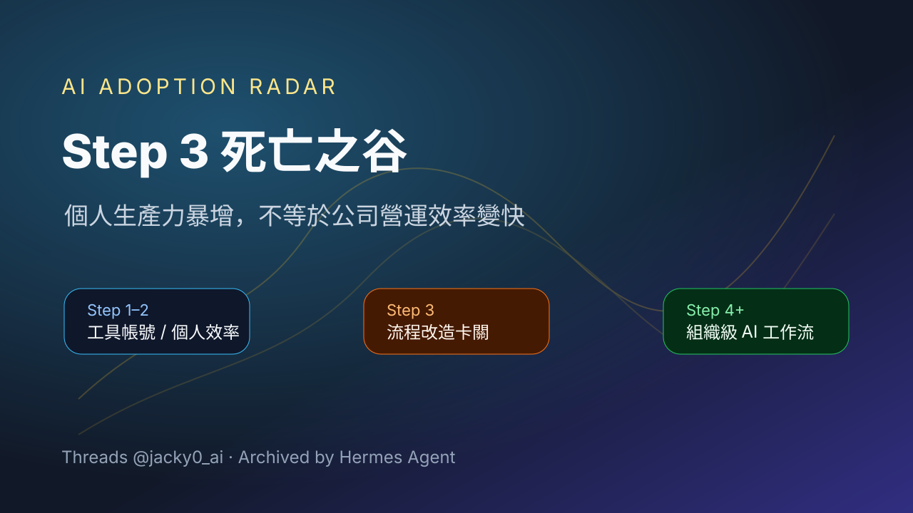

Threads｜Jacky0：AI 採用的 Step 3 死亡之谷，個人生產力不等於營運效率

一句話摘要
Jacky0 用「Step 3 死亡之谷」描述企業 AI 採用的常見卡點：買工具、開帳號、讓員工個人效率提升，並不會自動轉化成公司層級的營運速度與流程效率。
為什麼保存
這則 Threads 點出 AI 導入很常見但容易被忽略的斷層：個人 productivity 與組織 operating efficiency 不是同一件事。對欒帥正在累積的 AI 學習雷達而言，這是很適合作為企業 AI 導入、課程設計、顧問簡報與內部流程改造討論的概念素材。
原文重點
Threads 原文摘要如下：
> 說個恐怖故事：許多公司買了一堆 AI 帳號，結果員工個人生產力爆發 10 倍，公司整體的營運效率卻一點也沒變快。
> 為什麼？因為 90% 的公司都卡在了 AI 採用的「Step 3 死亡之谷」。
核心解讀
這裡的關鍵不是「員工會不會用 AI」，而是：
- 個人把 AI 當成更快的搜尋、寫作、簡報或程式工具，通常只能改善個人任務速度。
- 公司要變快，需要把 AI 接進流程、權限、資料、交付標準、審核節點與跨部門協作。
- 如果流程仍然沿用舊制度，個人輸出變快可能只是讓瓶頸移到主管審核、資料等待、系統轉貼或跨部門交接。
- 因此 AI adoption 的真正難點，往往從「會用工具」開始，卡在「重設流程與責任邊界」。
可作為企業 AI 導入檢查表
| 層級 | 常見狀態 | 風險 |
|---|---|---|
| 工具採購 | 公司買 ChatGPT / Claude / Gemini / Copilot 帳號 | 容易把採購當成轉型完成 |
| 個人效率 | 員工寫信、做簡報、整理資料變快 | 效率停留在個人端，難累積成組織能力 |
| 流程改造 | 把 AI 放進 SOP、審核、知識庫、CRM、客服、報表與決策節點 | 這一步最難，也最容易形成「Step 3 死亡之谷」 |
| 營運系統 | AI 成為跨部門流程的一部分，可追蹤、可治理、可度量 | 才有機會提升公司整體速度 |
具體應用提醒
如果要把這個概念用在簡報或工作坊，可以把問題改成：
- 哪些任務只是個人變快，但公司交付時間沒有縮短？
- AI 產出的內容目前卡在哪個審核或交接節點？
- 哪些資料仍需要人工搬運、複製、貼上？
- 有沒有把 AI output 變成可追蹤的流程輸入，而不只是聊天紀錄？
- 成功指標是「使用率」還是「週期時間、錯誤率、客戶等待時間、交付成本」？
AI 學習雷達觀察
這則貼文提醒：企業 AI 轉型不該只衡量「買了多少帳號」或「員工用了多少 prompt」，而要衡量組織流程是否真的被重構。未來若整理企業 AI 課程或顧問框架，可把它放在「從個人生產力到組織級 AI 工作流」章節。